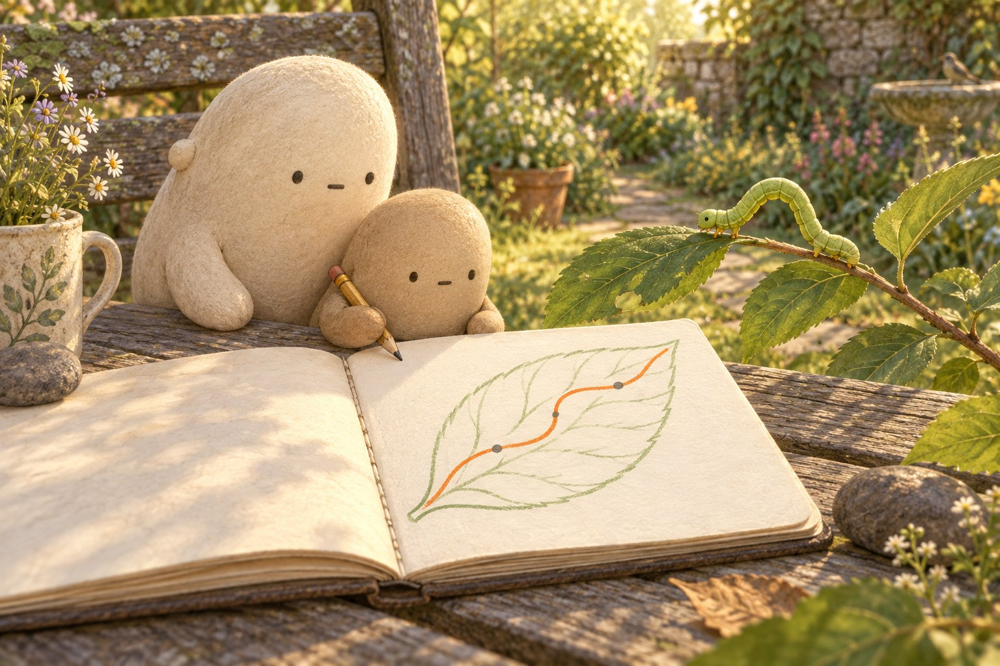

WONDER DAILY GRADE 2 · MATH
How much leaf is left?
A loop goes somewhere. · Curiosity day
Name __________________________ Date _______________

| Part | Whole route | First stretch | Next stretch |
|---|---|---|---|
| Length (mm) | 32 | 12 | 9 |
Use the table numbers. The picture is not a ruler.
1. Walk 12 mm, then 9 mm. How far in all?
12 + 9 = ______Show your thinking.
2. Route is 32 mm. After 12 mm and 9 mm, how much is left? Show both steps.
32 − (12 + 9) = ______Show your thinking.
3. Add 8 mm to the 32 mm route. After a 21 mm walk, how much is left?
(32 + 8) − 21 = ______Show your thinking.
4. A trip goes 7 mm, then 6 mm, then 5 mm. How far in all?
7 + 6 + 5 = ______Show your thinking.
5. Trip A: 12+9 mm. Trip B: 7+6+5 mm. Which is longer, and by how much?
(12 + 9) − (7 + 6 + 5) = ______Show your thinking.
6. 11 mm left. Two friends share it as evenly as they can. How much each, and how much left over?
11 ÷ 2 = ______Show your thinking.